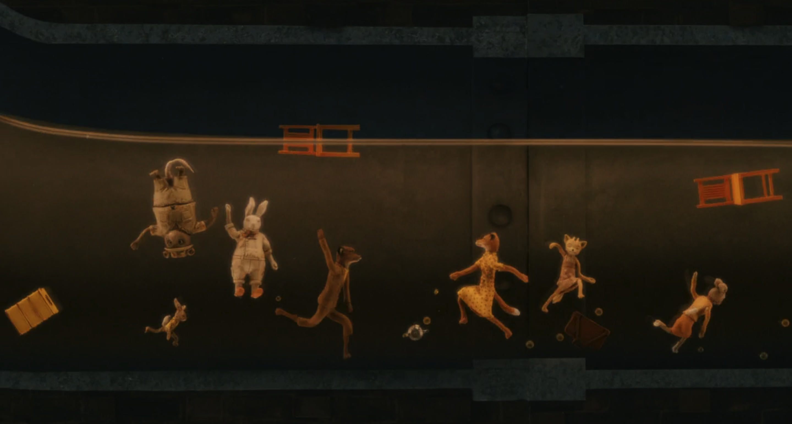

The animals are beginning to starve as the farmers camp out in front of their only exit. Mr. Fox realizes the farms must be unacommpanied, and he digs through the bottom of the farms to get their food.

Briefly after they steal everything from the farmers, Bean floods the animals out with his cider and traps them in a sewer with one opening that they block with a car.
Mr. Fox has a moment of reflection, and Mrs. Fox comes to speak with him. He realizes his ego is dangerous to himself and the people around him, and almost turns himself in so that the other animals can be safe.
Instead, the animals coordinate a plan to disarm the farmers and temporarily escape from the sewer.